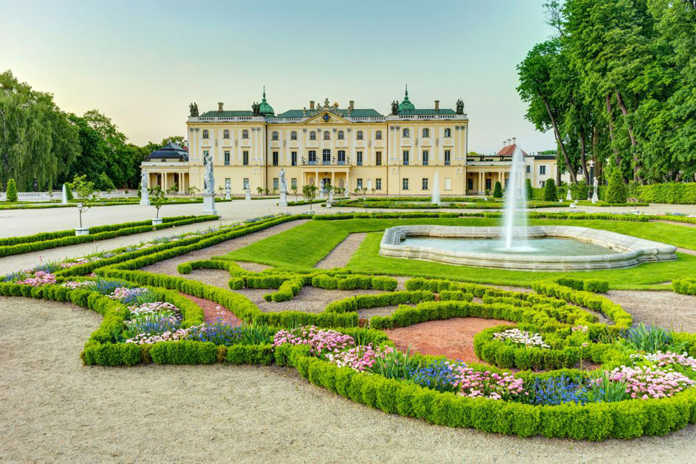

Hello! My name is Patryk Baruch.

Something about me.
-
I am from Poland.
Poland boasts a compelling blend of history, culture, and natural beauty. It's an EU member with a resilient spirit and thriving cities like Warsaw and Kraków. -
My city is called Białystok.
Białystok, in northeastern Poland, is a lively city renowned for its historical charm, cultural diversity, and beautiful parks. It's a vibrant hub in the Podlaskie Voivodeship region. -
I am 19 years old.
At this age back starts hurting and general well-being gets worse and worse (jk). -
In high school, I studied extended Math, CS, and English
I really enjoyed my classes and I'm satisfied with my choice. Without that, I wouldn't be at the HZ. -
My hobbies are carting and working out.
When I was younger, I used to go carting every week. Now I don't do it so often but instead I train on a regular basis. - The photo on the left is Branicki's Palace. It was built in the XVI century and was owned by the Wiesłowski family. This family also owned the whole city of Białystok.